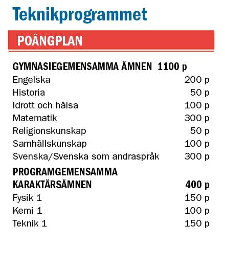
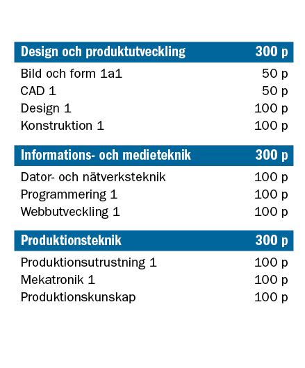

Inriktningar
Här lär du dig
Med eleven i centrum skapar vi en aktuell, intressant och meningsfull studietid som ger dig goda förutsättningar för såväl fortsatta studier som ett framtida yrkesliv. Allt sker i en digital lärmiljö, du får använda professionell mjukvara och den senaste tekniken. Du utgår ofta från praktiska problem som du löser tillsammans med andra eller enskilt, ibland i projektform. Du tränar din förmåga att utveckla nya och kreativa lösningar. Du tränar dig i att analysera, modellera, utveckla, se samband, dra slutsatser och argumentera för att bättre förstå tekniska system. Du söker och bearbetar information källkritiskt. Under studietiden får du möjlighet att starta och driva eget UF-företag.
Behörighetskrav
Om du söker till Teknikprogrammet måste du ha minst betyget E i ämnena:
- Svenska/Svenska som andraspråk
- Matematik
- Engelska
- Biologi
- Kemi
- Fysik
- 6 övriga ämnen
Efter Gymnasiet
Teknikprogrammet ger bred behörighet att söka till högskola och universitet. Du kan välja att utbilda dig till civilingenjör, designer, spelutvecklare och mycket mer. Inriktningen teknikvetenskap ger, utan vidare val under programmets gång, behörighet till civilingenjörs- och högskoleingenjörsutbildningar.



Sociala medier
Facebook
Instagram
Twitter